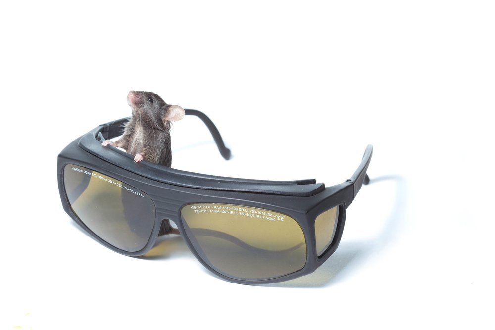

Research
The Neurobiology of Motivational State and Sensory Processing

Our laboratory seeks to understand how the needs of the body determine which sensory cues are attended to, learned, and remembered. In particular, we are investigating how natural and experimentally induced states of hunger modulate neural representations of food cues, and the consequences for obesity, binge eating, and other eating disorders. Previous studies support a simple model for hunger-dependent processing of food cues: During states of satiety, food cue information enters sensory neocortex but may not flow to cortical areas involved in selective processing of motivationally salient food cues, such as postrhinal cortex (POR). It has been suggested that during states of hunger, POR may be attentionally ‘primed’ such that food cue information spreads from visual cortex through POR to amygdala and on to lateral hypothalamic neurons involved in food-seeking behavior. We are investigating the mechanisms by which genetically, anatomically and chemically defined classes of cortical neurons facilitate cue-induced feeding in a hunger-dependent manner. Such motivation-specific priming of cortical sensory representations may arise from amygdalar and hypothalamic synaptic inputs to cortex, as well as from local hormonal and neuromodulatory actions on specific cortical neurons.
To monitor motivation-related changes in neural activity in the same large populations of neurons across hours, days and weeks, our lab uses two-photon calcium imaging and multi-electrode recordings in behaving mice. The identity of each visualized neuron can be deduced from genetic, anatomical, chemical and immunohistochemical markers. The importance of these cell classes in guiding behavior is then assessed by cell-type and area-specific activation or silencing of neurons using optogenetic and pharmacogenetic approaches. We are also developing tools for imaging activity of cell bodies and axon terminals from identified projection neurons and from deeper brain structures, and to make sense of these high-dimensional datasets within a broader theoretical and computational framework.